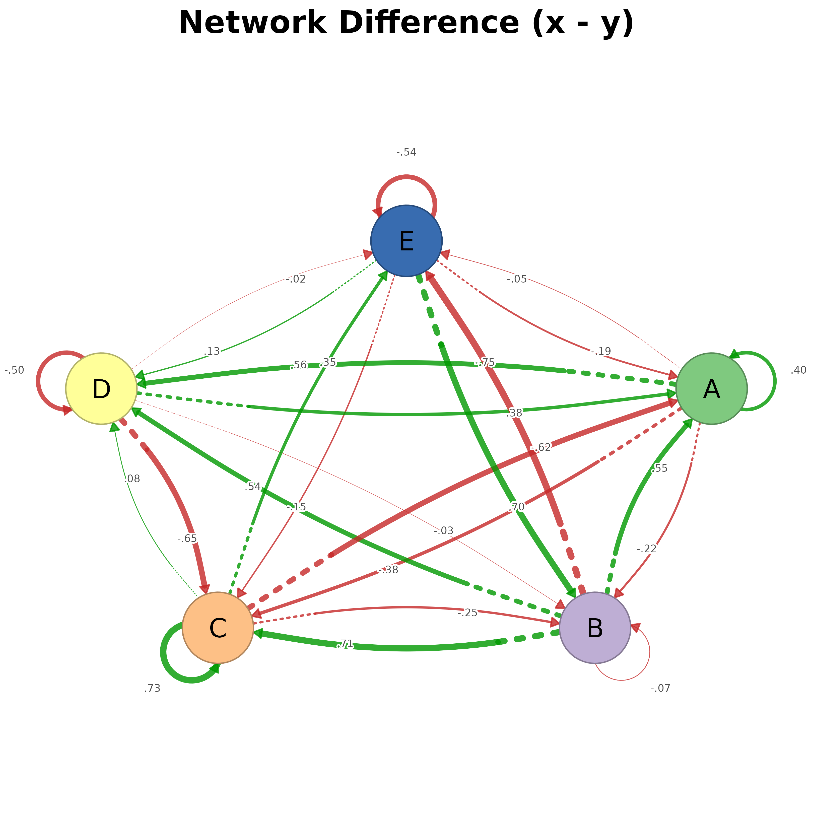
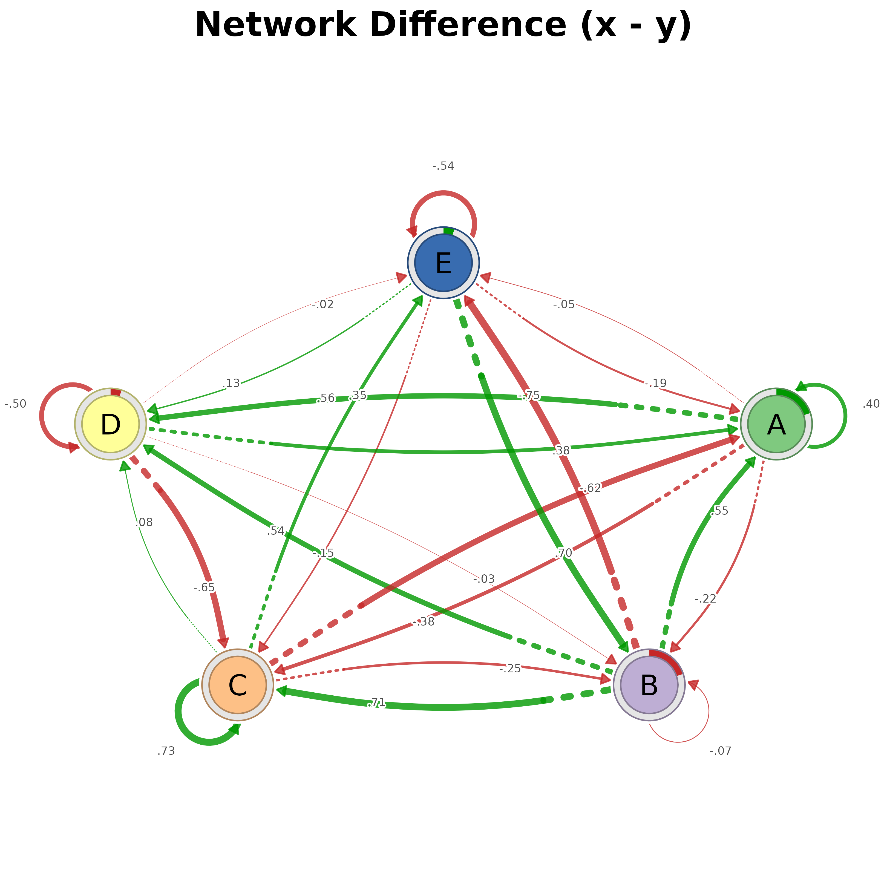

Plots the difference between two networks (x - y) using splot. Positive differences (x > y) are shown in green, negative (x < y) in red. Optionally displays node-level differences (e.g., initial probabilities) as donut charts.
Usage
plot_difference(
x,
y = NULL,
i = NULL,
j = NULL,
pos_color = "#009900",
neg_color = "#C62828",
labels = NULL,
title = NULL,
inits_x = NULL,
inits_y = NULL,
show_inits = NULL,
donut_inner_ratio = 0.8,
force = FALSE,
combined = TRUE,
difference = FALSE,
...
)Arguments
- x
First network: matrix,
cograph_network,CographNetwork,tna,igraph, list-like object with$weights, plain list of networks, orgroup_tna. Forgroup_tnawith 2 groups, compares them directly. For more groups, plots all pairwise comparisons (or specify i, j).- y
Second network: same type as x. Ignored if x is a list or
group_tna.- i
Index/name of first group when x is group_tna. NULL for all pairs.
- j
Index/name of second group when x is group_tna. NULL for all pairs.
- pos_color
Color for positive differences (x > y). Default "#009900" (green).
- neg_color
Color for negative differences (x < y). Default "#C62828" (red).
- labels
Node labels. NULL uses rownames or defaults.
- title
Plot title. NULL for auto-generated title.
- inits_x
Node values for x (e.g., initial probabilities). NULL to auto-extract from tna.
- inits_y
Node values for y. NULL to auto-extract from tna.
- show_inits
Logical: show node differences as donuts? Default TRUE if inits available.
- donut_inner_ratio
Inner radius ratio for donut (0-1). Default 0.8.
- force
Logical: force plotting when more than 4 groups (many comparisons). Default FALSE.
- combined
Logical: when TRUE (default) and
xis a multi-group input that triggers all-pairs plotting, lay panels out in an internal grid viagraphics::par(mfrow=...). Set to FALSE to draw into a layout the caller has already configured (e.g. viapanel_layout()). Has no effect for the single-pair path.- difference
Logical. If
TRUE,xis treated as an already-subtracted difference network (noyneeded). Atna_comparisonobject (fromtna::compare()) is detected automatically and its$difference_matrixis used.- ...
Additional arguments passed to splot().
Details
The function computes element-wise subtraction of the weight matrices. Edge colors indicate direction of difference:
Green edges: x has higher weight than y
Red edges: y has higher weight than x
When initial probabilities (inits) are provided or extracted from tna objects, nodes display donut charts showing the absolute difference, colored by direction:
Green donut: x has higher initial probability
Red donut: y has higher initial probability
For lists of networks (e.g., group_tna), specify which elements to compare using i and j parameters.
See also
plot_compare, the deprecated alias of this function.
Examples
set.seed(42)
m1 <- matrix(runif(25), 5, 5)
m2 <- matrix(runif(25), 5, 5)
rownames(m1) <- colnames(m1) <- LETTERS[1:5]
rownames(m2) <- colnames(m2) <- LETTERS[1:5]
plot_difference(m1, m2)

# With node-level differences
plot_difference(m1, m2,
inits_x = c(.3, .2, .2, .15, .15),
inits_y = c(.1, .4, .2, .2, .1))
